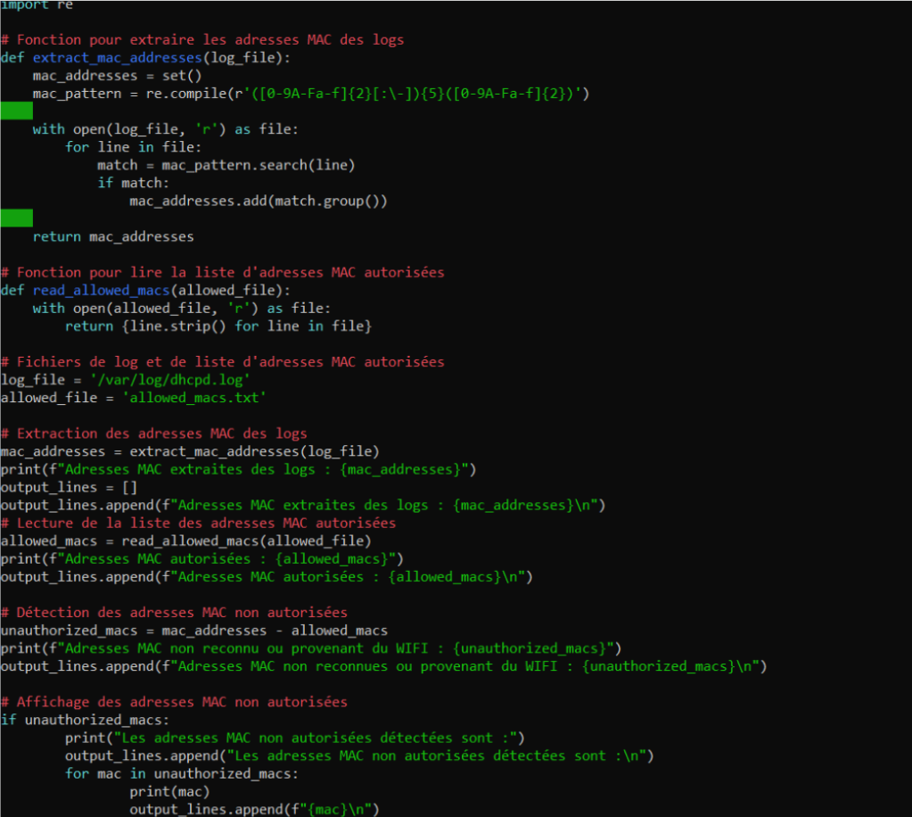

Mise en place de la redirection
Redirection des logs DHCP vers un fichier.
Installation de Rsyslog avec la commande apt.
On doit modifier le fichier de configuration du DHCP afin qu'il produise des logs pour cela on ajoute une ligne dans /etc/dhcp/dhcpd.conf
log-facility local7;
Par la suite on se rend dans le fichier de configuration /etc/rsyslog.d/dhcpd.conf pour indiquer à Rsyslog où enregistrer les logs et on ajoute la ligne :
local7.* /var/log/dhcpd.log
Analyse des logs et extraction des @MAC
Création d’un fichier avec les adresses mac connectées au dhcp de notre réseau.
nano allowed_macs.txt
On remplis le fichier avec les adresses mac de notre réseau dont le DHCP à besoin (1 par ligne).
On crée un script python afin d’analyser les logs du dhcp et de comparer les adresses mac contenues dans les logs à celles autorisées dans le fichier ci-dessus. 